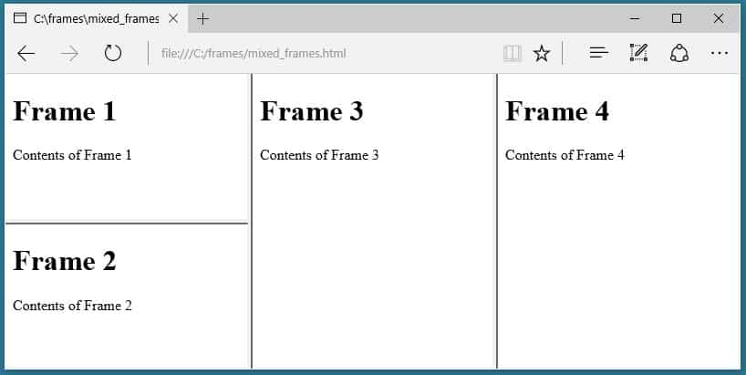

Dividing the browser window into multiple sections using frames ⋆°.☾
HTML Frames are used to divide the browser window into multiple sections, where each section can display a different HTML document. A group of frames is called a frameset, and it replaces the normal
tag when used.| Attribute | Description |
|---|---|
| frameborder | Turns the frame border on or off. |
| bordercolor | Changes the color of the frame border. |
| marginwidth | Adjusts the margin on the left and right inside the frame. |
| marginheight | Adjusts the margin above and below the content inside the frame. |
| noresize | Locks the frame border to prevent resizing. |
| name | Gives a name to the frame so links can target it. |
| scrolling | Indicates whether a scroll bar is present. |
| src | Specifies which webpage or HTML file to display inside the frame. |

𝜗ৎ Activity: Create a frameset layout with a navigation menu on the left side and a content section on the right side. When a user clicks a link in the navigation frame, the content should load in the main frame.